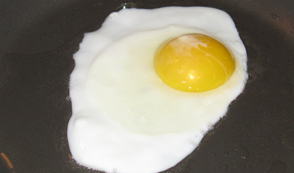
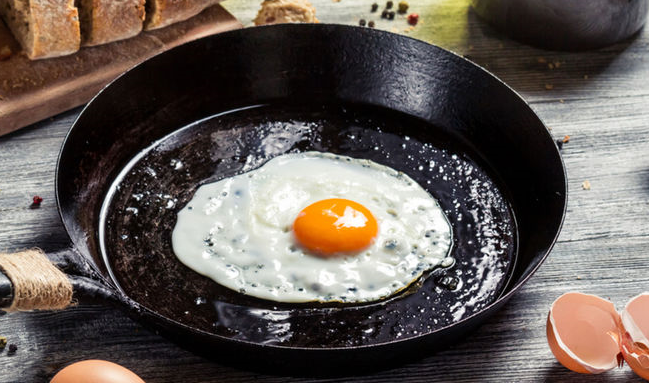
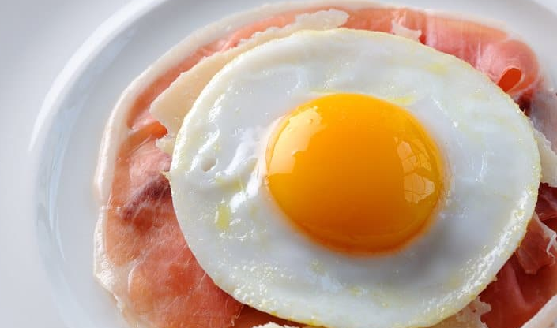

Popis
Volské oko patří k náročnějším jídlům na přípravu. Důvodem je jeho nutnost kombinovat např. s pečivem nebo jinou pochutinou.
Můžete ho samozřejmě jíst samotné, ale příliš se to nehodí, protože volské oko samo o sobě nezasytí.



Příprava
Suroviny
- vajíčko
- olej
Postup
- na pánev kápneme olej a necháme rozpálit
- rozbijeme vajíčko a vylijeme jeho obsah na pánev
- necháme pár minut smažit
- když jsme spokojeni s konzistencí, sundáme vajíčko z pánve
Cena
Uvážíme cenu vajíčka a cenu oleje.
Krabice 10 ks vajíček stojí okolo 33,- kč a potřebujeme právě jedno vajíčko.
Lahev 500ml oleje stojí kolem 27,- kč a my z ní spotřebujeme zhruba 2ml.
3,41 kč/ks
Cena za kus je vypočítána pouze s ceny surovin. Nezohledňuje cenu energií a použitého nádobí.
U volského oka je potřeba ještě počítat s doplňkem, pokud jím je krajíc chleba, je potřeba přičíst ještě 1,32 kč/ks